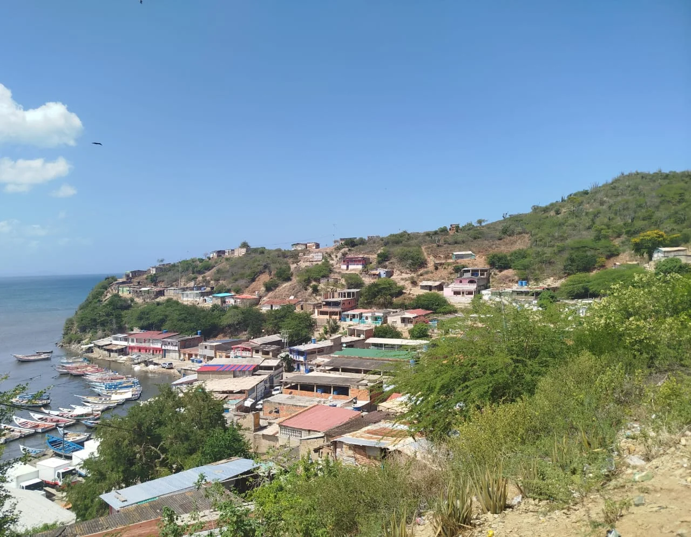
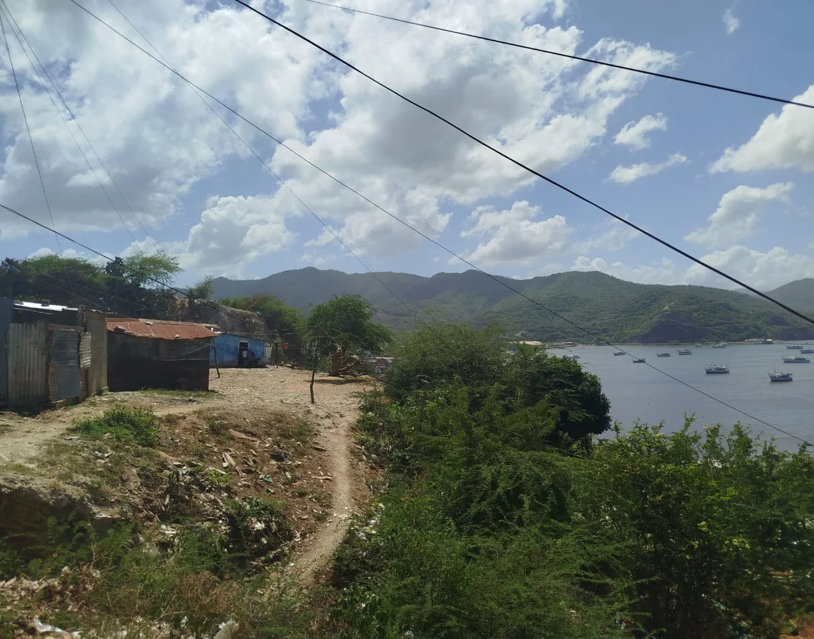
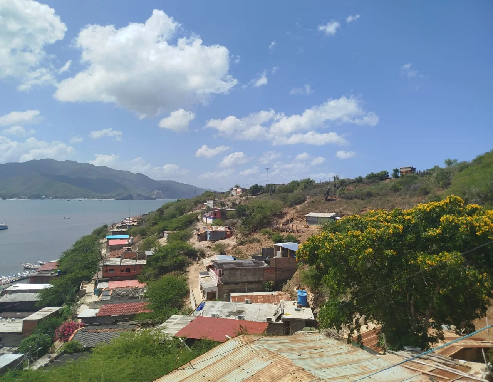
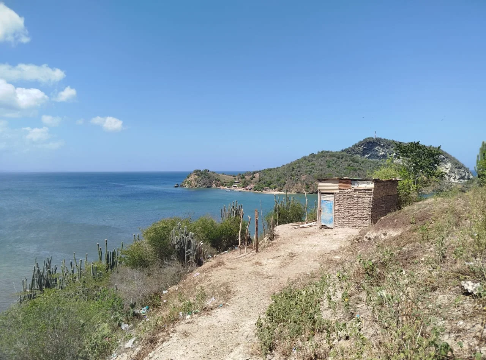
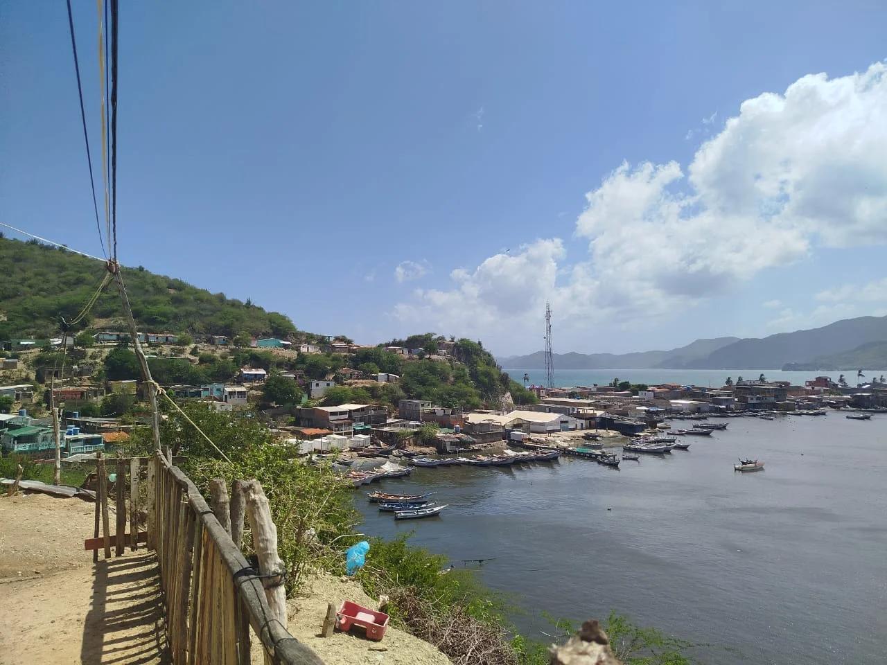
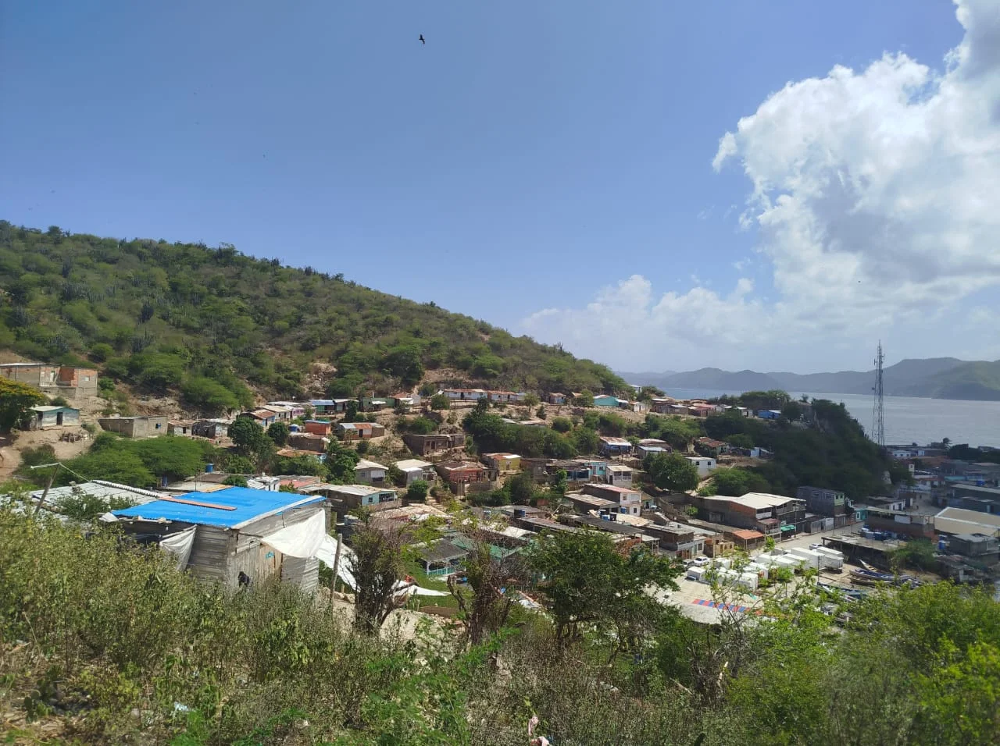

El Cerro El Dique es una prominente elevación en El Morro de Puerto Santo, que no solo ofrece una geografía imponente, sino que también es un núcleo de vida comunitaria. Este cerro es uno de los tres puntos altos de El Morro que han sido asentados por la población local, caracterizándose por la densa concentración de viviendas que escalan sus laderas.




Desde lo alto, se obtienen vistas directas de la bahía y del poblado, consolidándolo como un punto de observación privilegiado que entrelaza la vida cotidiana con el paisaje costero. La posición geográfica de este cerro es clave para el entorno costero.

Cómo Llegar
Para acceder, primero entra al sector El Dique. El ascenso principal se realiza subiendo por las escaleras y senderos que zigzaguean entre las casas hasta llegar a la cima del cerro. Aunque hay varias rutas, todas requieren iniciar en la base del sector.
Mejores Días
Al igual que en La Pica, se recomienda visitar con clima cálido y despejado para mayor seguridad. Adicionalmente, el ascenso en primavera es ideal, ya que la vegetación del cerro se encuentra en su máximo esplendor, añadiendo un toque hermoso al entorno.
¿Por Qué Visitarla?
La visita es esencial por la espectacular vista ofrece hacia la bahía, el poblado y el Islote. Es un punto excelente para el senderismo, y su acceso directo a Playa La Francesa y la belleza de sus árboles en primavera, lo convierten en un destino único.
El Dique
En la parte inferior, El Dique se conecta directamente con la hermosa Playa La Francesa, ofreciendo a los habitantes y visitantes un acceso inmediato a la costa. Además, desde sus alturas, la vista se dirige sin obstáculos hacia el mar abierto y, de manera específica, hacia el Islote, una formación rocosa que se alza sobre las aguas. Funciona como una barrera natural importante, su presencia montañosa típicamente ayuda a proteger las áreas interiores y la bahía del impacto directo de los vientos fuertes o la erosión marina. El camino para llegar a la cima refleja la vida del sector. Esta subida, si bien es un ejercicio, permite experimentar de cerca la arquitectura y la cultura del sector antes de ser recompensado con la explanada superior. La vista desde el Dique es un testimonio de la interacción entre la comunidad pescadora y la naturaleza que la rodea, con docenas de botes anclados en la bahía a sus pies.
El Islote no pertenece a El Morro de Puerto Santo pero puede ser una parada en tu viaje; es una experiencia que te conecta con la esencia de la vida costera, con la sencillez y la calidez de su gente, y con la belleza indomable de la naturaleza venezolana. Es un recordatorio de que, a veces, los lugares más pequeños guardan las historias más grandes y los corazones más generosos.
